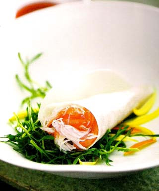
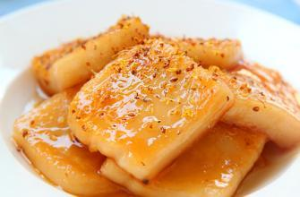
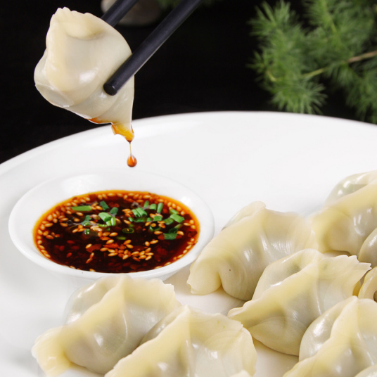
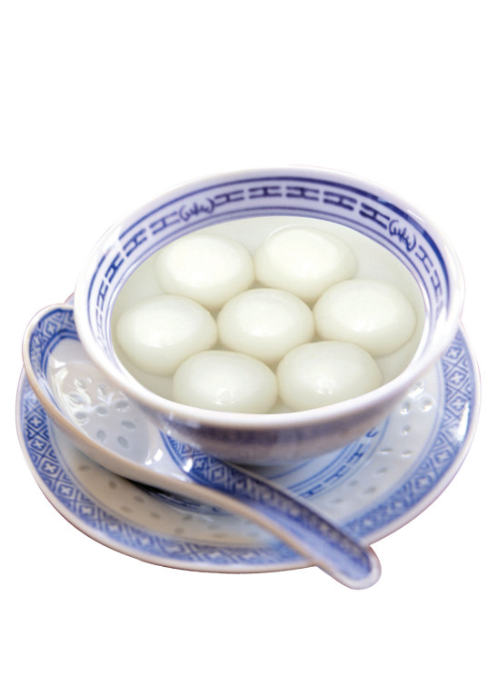

| 春卷 |  | 春卷，又称春饼、春盘、薄饼。是中国民间节日的一种传统食品，流行于中国各地，在江南等地尤盛。在中国南方，过春节不吃饺子，吃春卷和芝麻汤圆。并且在漳州一带清明时节也吃春卷，民间除供自己家食用外，常用于待客。春卷历史悠久，由古代的春饼演化而来。 |
| 年糕 |  | 年糕（nián-gāo，rice cake; new year cake），中国汉族的传统食物，属于农历新年的应时食品。年糕是用大米或糯米，煮成饭用打制或水磨成粉后压制而成的糕，在春节，我国很多地区都有讲究吃年糕。 年糕有红、黄、白三色，象征金银，年糕又称“年年糕”，与“年年高”谐音，寓意着小孩身高一年比一年高。所以前人有诗称年糕：“年糕寓意稍云深，白色如银黄色金。年岁盼高时时利，虔诚默祝望财临。” |
| 饺子 |  | 饺子（Dumpling），又称水饺，汉族传统面食。其由馄饨演变而来 ，源于中国古代的角子，原名“娇耳”，距今已有一千八百多年的历史 。由东汉南阳涅阳（今河南南阳邓州）人张仲景发明 ，最初作为药用。深受中国人民喜爱，是中国北方民间的主食和地方小吃，也是年节食品。有一句民谚叫“大寒小寒，吃饺子过年。”饺子多用面皮包馅水煮而成。 |
| 汤圆 |  | 汤圆，别称“汤团”“浮元子”，是汉族传统小吃的代表之一 。同时，也是中国的传统节日元宵节所最具有特色的食物，也表达了古代人民对幸福生活的一种向往和期盼。 |
新春快乐